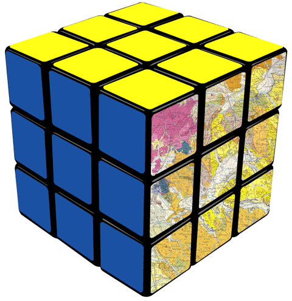
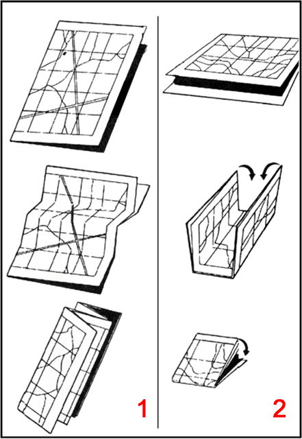

23 marzo, 2011 | di Antonio D'Argenio
Tra le cose che mi piacciono, la cartografia e le biciclette occupano un posto importante. Questo simpatico video del britannico Ordnance Survey le mette assieme per illustrare i vantaggi delle mappe della linea OS Select. Si tratta di prodotti a stampa di scala e taglio standard, centrati su un punto indicato da chi acquista. L’idea ed il video hanno già qualche anno.
A quando qualcosa del genere in Italia?

Posted in Entropia | No Comments »
27 marzo, 2010 | di Sergio Farruggia
“Lo spunto è giocondo, ma l’argomento è molto, assai serio”
Incontro il professore Robert Laurini in occasione di una riunione del progetto GIS4EU e m’informa: “Il 4 marzo sarò a Genova: terrò un seminario al DISI (Dipartimento d’Informatica e Scienze dell’Informazione)”: un grazie alla prof.ssa De Floriani per aver invitato il suo collega a Genova.
 Il ricercatore francese non ha certo bisogno di presentazione presso la comunità geomatica italiana. Viene spesso in Italia, per tenere lezioni e seminari. Collabora con diversi centri universitari e non pochi esperti nazionali hanno trascorso un periodo della loro formazione all’Institut National des Sciences Appliquées (INSA) di Lione. Penso che molti lettori di TANTO avranno già avuto occasione di ascoltare direttamente dalla sua voce cosa rappresenta l’immagine qui riprodotta (Mi spiace, questi fortunati sono esclusi dal gioco!!).
Il ricercatore francese non ha certo bisogno di presentazione presso la comunità geomatica italiana. Viene spesso in Italia, per tenere lezioni e seminari. Collabora con diversi centri universitari e non pochi esperti nazionali hanno trascorso un periodo della loro formazione all’Institut National des Sciences Appliquées (INSA) di Lione. Penso che molti lettori di TANTO avranno già avuto occasione di ascoltare direttamente dalla sua voce cosa rappresenta l’immagine qui riprodotta (Mi spiace, questi fortunati sono esclusi dal gioco!!).
Allora, riconoscete l’area geografica raffigurata con il COREMA riprodotto in figura? Ma cos’è un corema? C’informa il Nostro che il termine non è nuovo, è stato introdotto dal prof. Brunet, dell’Università di Montpellier per indicare una rappresentazione schematica del territorio, effettuata utilizzando una raccolta di simboli codificati, utili per eliminare ogni dettaglio superfluo per la comunicazione (e quindi la comprensione) di quanto si vuole raffigurare con la mappa. All’INSA studiano l’applicazione di questi concetti sia per individuare nuovi modi di descrivere le conoscenze geografiche, sia come strumento per accedere ai data base geografici. Il primo filone attiene al tema del Data Mining geografico e quindi si concentra sulle modalità di individuazione di pattern geografici significativi e sulla loro estrazione per la rappresentazione di conoscenze geografiche contenute in un DB geografico. L’altro filone riguarda lo studio su come sfruttare le mappe corematiche per rendere più efficiente la fruizione dei contenuti di un Data Base geografico. Se vogliamo, questa parte della ricerca può essere vista come l’applicazione speculare della precedente: una volta che ho individuato la modalità di rappresentazione globale dei contenuti di un DB geografico , quindi ho ottenuto sunti visuali dei contenuti del DB stesso a diversi livelli gerarchici (per es. nazionale, regionale, provinciale, …), si possono studiare tecniche per accedere alle informazioni contenute nel DB, in funzione del grado di approfondimento e di dettaglio che interessa riprodurre.
Spero di avere incuriosito chi ancora non conosceva l’argomento. Chi fosse interessato può recuperare qui una collezione delle slide proiettate da Laurini anche a Genova: gli appassionati di linguaggi penso valuteranno interessante la struttura in più livelli del linguaggio ChorML. Personalmente, ho trovato anche istruttiva l’esposizione di come si sta affrontando il problema dell’accesso ai DB geografici: resto sempre attratto dagli esempi di contaminazione tra differenti ambiti scientifici.
 Mentre il professore parlava, mi sono venute in mente alcune considerazioni di Franco Farinelli su come ancora usiamo esaminare le mappe, cioè come se fossero pagine scritte; non le guardiamo come immagini. E –se ho inteso bene- come riflettendo su questa seconda modalità di osservazione, la mappa potrebbe darci nuove informazioni sul mondo, cioè sul Globo. Di fantasia in fantasia ho immaginato che un DB geografico possa essere come quel labirinto di cui parla Farinelli. In effetti, ad esempio il paradigma della Digital Earth è sferico e non piano, è profondo e non piatto, non è statico ma sta nel tempo. Insomma, ho pensato che sarebbe appassionante ascoltare questi due scienziati chiacchierare tra di loro, raccontarsi i loro studi, le loro riflessioni, i risultati e le domande ancora aperte. Sogno? Chissà forse un giorno … perTANTO… la mappa, come l’Arte parafrasando Kandiskij, “oltrepassa i limiti nei quali il tempo vorrebbe comprimerla, e indica il contenuto del futuro”.
Mentre il professore parlava, mi sono venute in mente alcune considerazioni di Franco Farinelli su come ancora usiamo esaminare le mappe, cioè come se fossero pagine scritte; non le guardiamo come immagini. E –se ho inteso bene- come riflettendo su questa seconda modalità di osservazione, la mappa potrebbe darci nuove informazioni sul mondo, cioè sul Globo. Di fantasia in fantasia ho immaginato che un DB geografico possa essere come quel labirinto di cui parla Farinelli. In effetti, ad esempio il paradigma della Digital Earth è sferico e non piano, è profondo e non piatto, non è statico ma sta nel tempo. Insomma, ho pensato che sarebbe appassionante ascoltare questi due scienziati chiacchierare tra di loro, raccontarsi i loro studi, le loro riflessioni, i risultati e le domande ancora aperte. Sogno? Chissà forse un giorno … perTANTO… la mappa, come l’Arte parafrasando Kandiskij, “oltrepassa i limiti nei quali il tempo vorrebbe comprimerla, e indica il contenuto del futuro”.
Posted in News | 6 Comments »
5 ottobre, 2009 | di Andrea Borruso
Ho passato un periodo in cui mi è risultato difficile leggere. Ho provato a cambiare genere ed autori, ma senza cambiare risultato. Poi il miracolo, grazie al digitale terrestre.
E’ entrato a casa mia da tre mesi, e due canali – RAI News 24 e RAI storia – mi riservano spesso delle piccole perle. L’otto Luglio scorso alle 8 di mattina, mentre provavo a svegliarmi, sono stato letteralmente rapito da un programma trasmesso dal primo dei due. Un uomo con lo sguardo vivo, parlava della Terra con parole “nuove”; dopo pochi minuti ho dovuto spegnere ed andare in ufficio. Ho annotato allora sul mio smartphone qualche dettaglio sul programma (lo so, sono malattie gravi) e sono uscito.
Durante la pausa pranzo dello stesso giorno, apro la pagina con il palinsesto, e leggo il nome esatto del programma: “Parole e teatro. Franco Farinelli e Margherita Hack”. Soddisfatto mi “tuffo” nel nuovo sito RAI, per provare a vederlo per intero in streaming. Non lo trovo e scrivo alla redazione di Magazzini Einstein – il “contenitore televisivo dedicato a temi, eventi e personaggi dell’arte e della cultura, del presente e del passato” – che ha curato il programma; mi rispondono subito, mi confermano che non è ancora visibile e che lo sarebbe stato nei mesi seguenti.
 Cambio strategia, concentro le mie ricerche web sull’uomo con lo sguardo acceso: Franco Farinelli. Tra i primi risultati, il libro “L’invenzione della Terra“. E’ pubblicato da Sellerio nella collana “Alle 8 della sera”; in questa vengono pubblicate le trascrizioni, rivedute e corrette, delle conversazioni trasmesse nell’omonimo programma di Radio DUE RAI. L’ho comprato subito, anzi non proprio subito, ma è un’altra storia.
Cambio strategia, concentro le mie ricerche web sull’uomo con lo sguardo acceso: Franco Farinelli. Tra i primi risultati, il libro “L’invenzione della Terra“. E’ pubblicato da Sellerio nella collana “Alle 8 della sera”; in questa vengono pubblicate le trascrizioni, rivedute e corrette, delle conversazioni trasmesse nell’omonimo programma di Radio DUE RAI. L’ho comprato subito, anzi non proprio subito, ma è un’altra storia.
Nella nota di apertura Sergio Valzania, il curatore della collana, scrive:
“Non avevo mai riflettuto sulla lunghezza e la complessità del percorso che ha condotto l’umanità alla rappresentazione del mondo che ci consente di ridurre un territorio ad una mappa e l’intera Terra ad una raffigurazione a stampa”
Dopo avere letto questo libro ho pensato con forza: anche io!!
L’autore, a me sconosciuto (me ne vergogno), ha un curriculum importante: ha insegnato geografia a Ginevra, Los Angeles (UCLA), Berkley e a Parigi (alla Sorbona e all’École Normale Supérieure). Ci racconta il ruolo che avevano le rappresentazioni della Terra, quando il mondo era più piccolo perché in gran parte sconosciuto; ci descrive l’evoluzione della geografia, dall’Enuma Elis alla moderna cartografia. Lo fa usando una lingua ricca e semplice, come fanno spesso i grandi didatti. Ma torniamo al digitale terrestre.
A fine Settembre ricevo infatti un’email da Stefania Valentino, una gentilissima consulente della redazione RAI di Magazzini Einstein; mi scrive che è finalmente possibile guardare in streaming, il programma che mi aveva acceso dei neuroni da tempo in stato comatoso.
Il filmato potete guardarlo sul sito ufficiale. La prima parte, quella con Franco Farinelli, dura circa 20 minuti. Dedicategli un tempo “speciale”, senza interruzioni e distrazioni. Alla fine sarete dei “tecnici” migliori, perché capaci di guardare un po’ più là di uno scarto quadratico medio 

Se vorrete “ascoltare” anche tutto il libro, troverete qui tutti i capitoli.
Così come oggi l’universo – dicono gli astronomi – è una collezione di storie, la Terra è fin dall’inizio un insieme di modelli, per mezzo dei quali mettiamo ordine e stabiliamo relazioni tra le cose di cui si compone “lo spazio riempito di cose terrestri”. Attraverso la cosmogonia, la cosmologia, la scienza, la letteratura e l’arte, quel che anima la riflessione occidentale è l’antitesi tra due principali e formidabili modelli, alternativi e irriducibili fra loro: la mappa e il globo. L’intera modernità è stata costruita sulla prima, attraverso la riduzione ad essa del mondo, ed è in tal modo che la cultura occidentale ha inventato la Terra. Ma oggi il funzionamento del mondo non dipende più dallo spazio e dal tempo, che per la scienza esistono soltanto nella forma in cui esistono sulle mappe. Oggi dobbiamo fare i conti direttamente con il globo, senza nessuna delle tradizionali mediazioni. E poiché tutti i nostri modelli sono stati, direttamente o indirettamente, di natura cartografica, ciò vuol dire che dobbiamo urgentemente procedere alla reinvenzione della Terra.
E’ stato particolarmente difficile scrivere questo post, e credo si veda. La qualità del materiale di cui vi ho scritto, mi ha in qualche modo annichilito. Se e quando troverete il tempo per dedicarvi alle parole di Farinelli, mi piacerebbe sapere se vi ha fatto lo stesso effetto. Buona visione (e ascolto).
Posted in Entropia | 23 Comments »
2 settembre, 2009 | di Andrea Borruso
A Luglio, grazie alla gentilissima Eleonora Anello di envi.info, ho scoperto dell’esistenza del progetto WATERMAP. Si tratta di una mappa di Roma in cui sono rappresentate tutte le fontane che erogano acqua potabile in città. Nasce per far in modo che i turisti ed i residenti possano localizzare velocemente una fonte di ristoro, ed al contempo come strumento per muoversi con facilità per visitare musei e attrazioni (rappresentati insieme alle fontane sulle mappe).
A Roma arrivano 4 milioni di turisti l’anno, vengono erogati circa 1,5 milioni di metri cubi d’acqua potabile al giorno e vengono effettuati 200.000 controlli l’anno. Sono numeri importanti che hanno molto di più un valore statistico. Il progetto WATERMAP, sviluppato dalla Energie Healthness Concept, ha infatti anche l’obiettivo di fare comprendere ai cittadini l’importanza della diffusione dell’acqua potabile, come mezzo di contrasto dell’inquinamento ambientale.
Noi italiani siamo grandi consumatori di acqua minerale, ” basti considerare che a causa dell’uso di bottiglie di plastica e per il consumo di petrolio per fabbricarle, nel 2006 sono state utilizzate 665 mila tonnellate di petrolio e un’emissione di gas serra di circa 910 mila tonnellate di CO2 (fonte Legambiente). Senza considerare, inoltre, la fase del trasporto dell’acqua, che in Italia avviene principalmente su gomma, influendo negativamente sulla qualità dell’aria.”
Da amante di cartografia, avevo cercato la mappa sul sito, ma senza fortuna. Ieri Simona Forti (anche lei gentilissima), che si occupa per il progetto di comunicazione e relazioni web, mi ha segnalato che è possibile finalmente scaricare la mappa. L’ho fatto subito e qui sotto ne ho creato una versione (un po’) interattiva. Il progetto mi piace molto perché concilia (come dovrebbe essere sempre) servizi di pubblica utilità con l’attenzione alla salute del pianeta
Il servizio web con cui ho pubblicato questa versione interattiva di WATERMAP si chiama ClosR. E’ un progetto italiano che concilia la facilità di pubblicazione sul web di immagini ad alta risoluzione, con un’efficacissima modalità di fruizione. Gli ambiti di applicazione sono tanti: quello medicale, quello cartografico, quello dei beni culturali, etc..
E’ di facilissimo utilizzo: basta iscriversi ed usare un semplice modulo di upload. Alla fine del processo viene generato un URL univoco per l’immagine caricata, e viene fornito il codice per inserire il visualizzatore su qualsiasi pagina web (è quello che ho fatto per questo post). Molta bella la visualizzazione fullscreen, che si attiva cliccando sul tasto in alto a destra del visualizzatore.
E’ bello scrivere di progetti italiani come i due di questo post.
Posted in Strumenti | 1 Comment »
20 agosto, 2009 | di Andrea Borruso
Il titolo è buttato lì solo per fare audience, ma piegare bene una mappa non è cosa da poco.
Avete presente quei viaggi in macchina estivi, 40° all’ombra, 5 posti auto occupati, macchina piccola, tanta fame, tanto sale sul corpo? Cercate un luogo che vi sarà di sollievo e subito, voi grandi esperti cartografi, vi mettete a cercare quel famoso agriturismo su una mappa. Il bello è poco dopo, quando volete piegarla (sudata ormai anche lei) e volete farlo con cura, perché il viaggio è ancora lunga ed una mappa di carta è un oggetto prezioso: “la piego ioooo” la mappa, “ci penso ioooo” che faccio GIS, etc..
Io in queste circostanze, mi sono spesso sentito stupido. Raramente sono riuscito a piegare correttamente una carta che già aveva i segni di piega, figurarsi una carta stampata in casa ed ancora non piegata.

Ci viene in aiuto un godibile manuale di dominio pubblico dell’esercito degli Stati Uniti d’America: “Map reading and land navigation“. L’appendice B si intitola “MAP FOLDING TECHNIQUES” e ci illustra tre tecniche che ci faranno ottenere sia la portabilità di una mappa (riducendola di dimensioni), che l’usabilità della stessa (non sarà necessario aprirla interamente per leggerla). Qui sotto ne trovate illustrate due (classiche).

Il volume è acquistabile su Amazon, ed è leggibile liberamente in html e su Scribd (da cui potrete scaricarlo anche in PDF).
via Free Geography Tools
P.S. il cubo di Rubik (mia moglie che è cinefila dice alle volte “di Kubrik” ) vettoriale con cui ho “composto” la prima immagine l’ho scaricato da deviantART.
Posted in Didattica | 4 Comments »